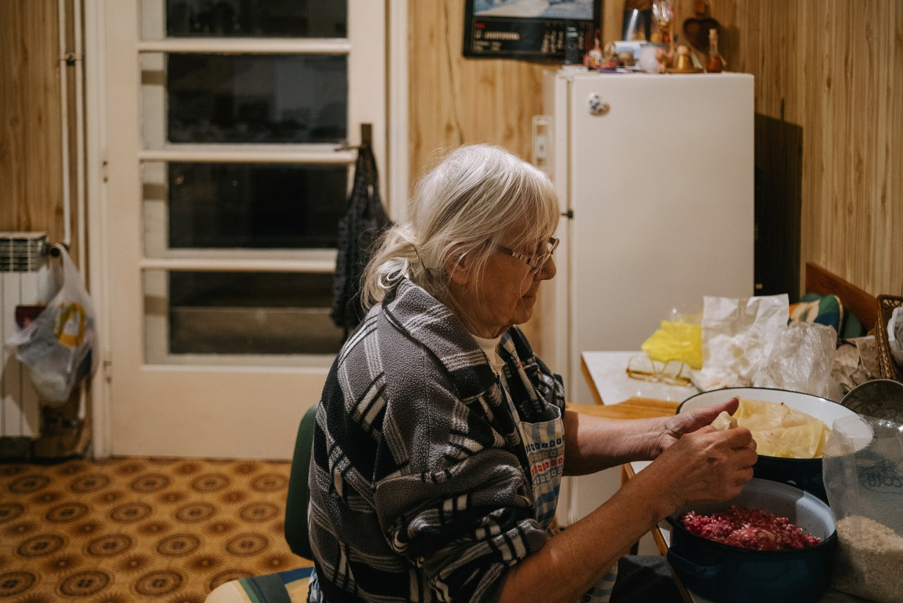
My grandma stayed by the stove and kept cooking lunch while the war pressed against the windows.
That is my earliest memory of my grandmother. I am writing this now in a kitchen that has gone quiet, and I want to begin where she was strongest. She raised me in a violent world, and she did it by refusing to let violence set the rhythm of the day. The war had the sky, but it could not have the hour of our lunch. Lunch had to happen, and the house had to be kept.
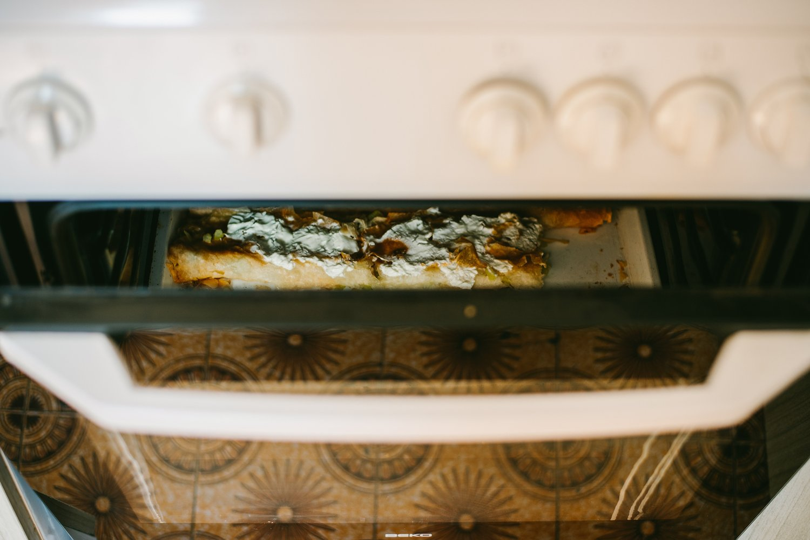
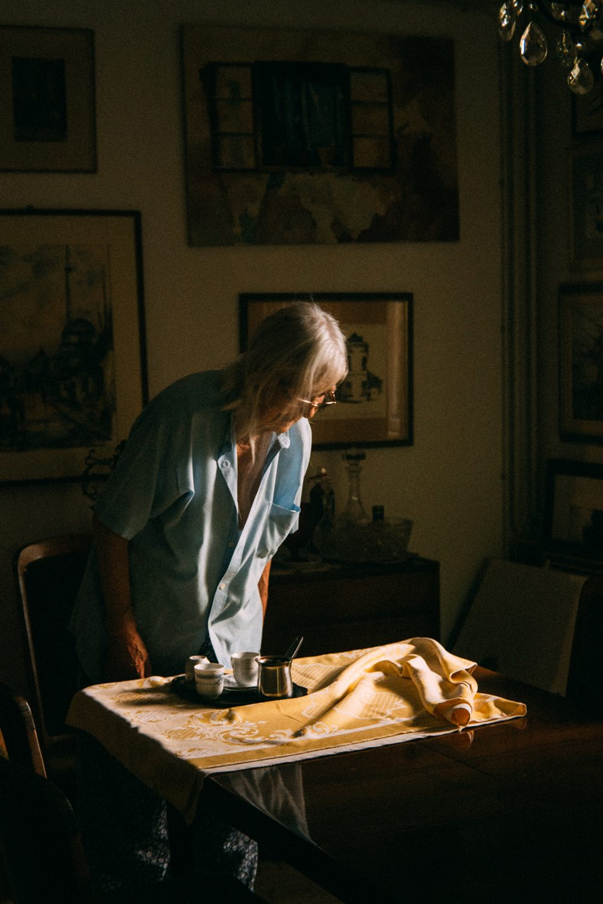
I did not understand then what that cost her, to hold a day intact while the windows shook. It was a whole architecture of will, built again every morning out of almost nothing. She stood between me and the dark and made the standing look like an ordinary Tuesday, so that the child I was could grow up believing the world was a gentle place. From my first memories, I knew that the world was not gentle nor kind. The gentleness had a name, and a pair of hands, and a list of things to do before noon.
And this is the part I can hardly write. The stove is cold now. The grief of that is so plain, so domestic, that it ambushes me each morning: just the first truly quiet kitchen of my life. I thought losing her would feel enormous. Instead, it feels like the smallest thing in the world, repeated; her absence handed to me again by every ordinary object she is no longer holding.
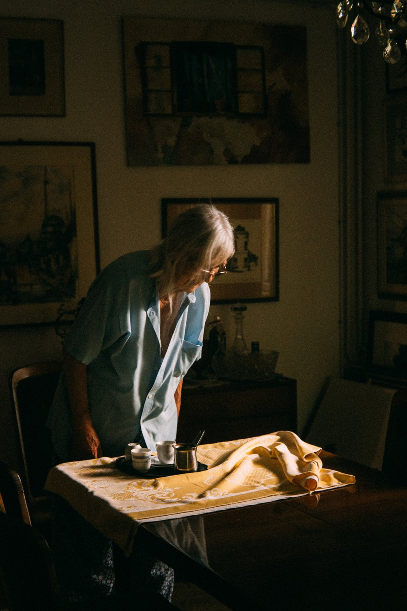
Endurance, for her, was domestic. There is a kind of endurance that history agrees to remember, the kind with a flag in it, the kind that is given a date.
And there is the other kind, hers, that no one writes down: a woman keeping the flame lit, a woman not letting go. It happens in kitchens. There are no witnesses. It is measured in lunches, in made beds, in a thousand small refusals to let the day fall in on itself. I think now that it was the bravest thing I have ever stood near, and I stood so near it, for so long, that I mistook it for the weather. You do not notice the roof until the day it is gone.
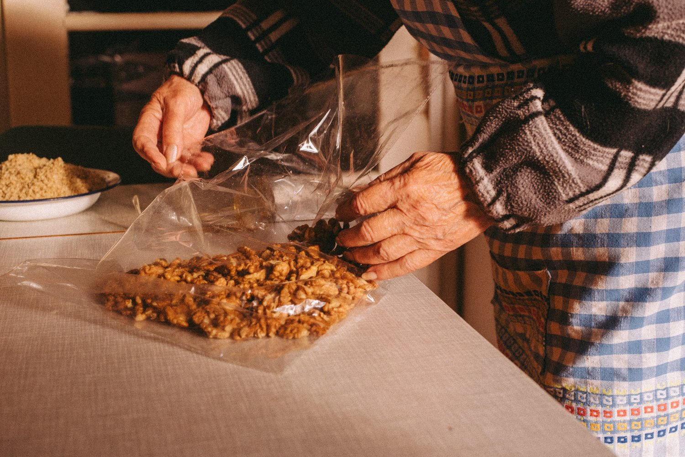
I have spent years making work about endurance, about staying inside difficulty, about letting the body be the place where care happens rather than the place where it is announced. It took me a long time to see that I was remembering you. The slowness in my practice is the slowness of a woman at a stove who refused to be hurried. You were the first endurance I ever saw.
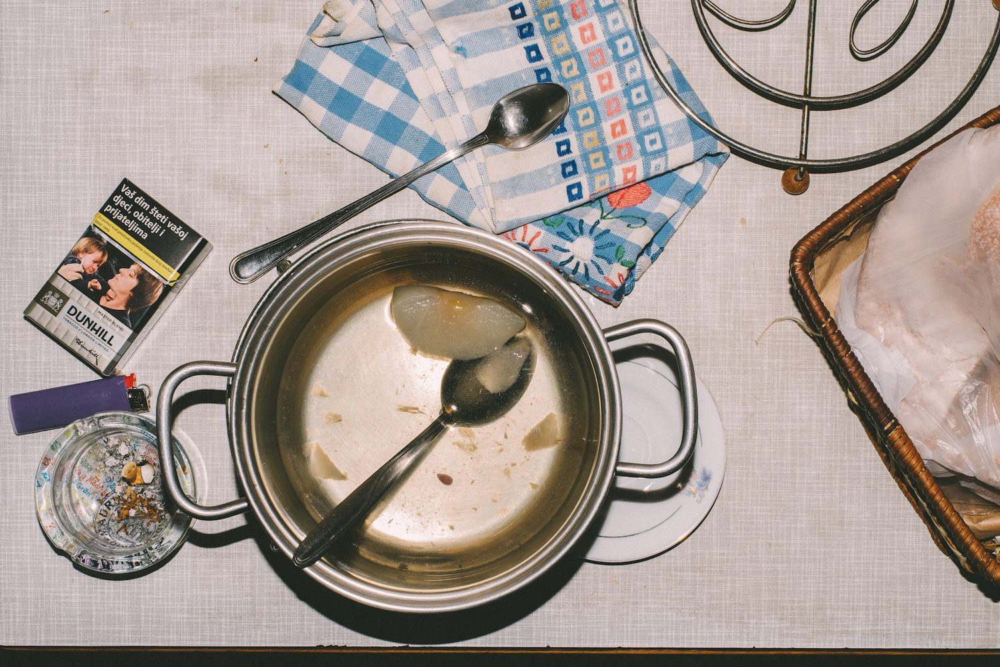
And now there is a new endurance, one I was in no hurry to learn. Grief, it turns out, keeps your pace exactly; it will not be rushed, and it insists on being done slowly, by hand.
I keep reaching for the fast way through, and there is no fast way; there is only your way. Stay inside the difficult thing, and do not let yourself be hurried. So all those years of work were, without my knowing it, a rehearsal for these days after you, for doing the small things properly. I used to think the thing I inherited from you was patience and strength. But it was the staying, and it is the last warm thing of yours still here in my body.
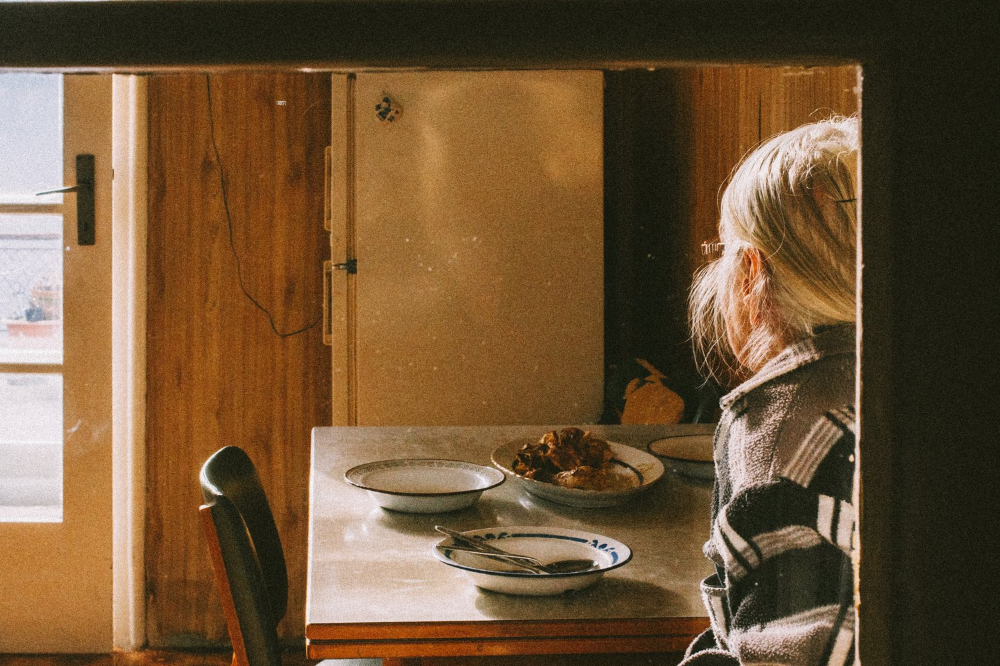
She was vain about her photograph. Strict about it, even. She only wanted to be seen in the right clothes, in the right light, in a room she had arranged herself. So over thirteen years, I learned a quiet movement around the house. I learned to photograph her sideways, from doorways, in the middle of her own life. I wanted to keep her exactly as she was when she was not performing for anyone.
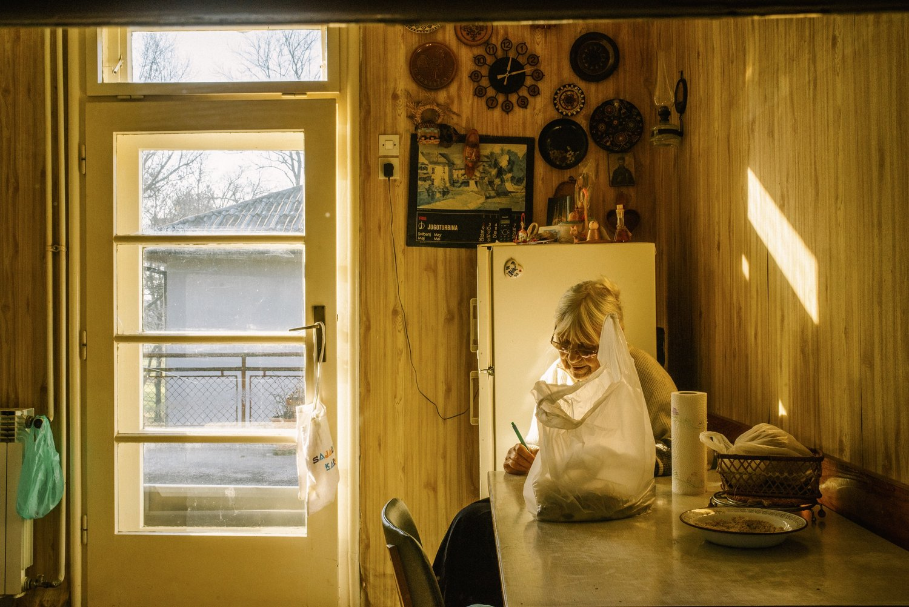
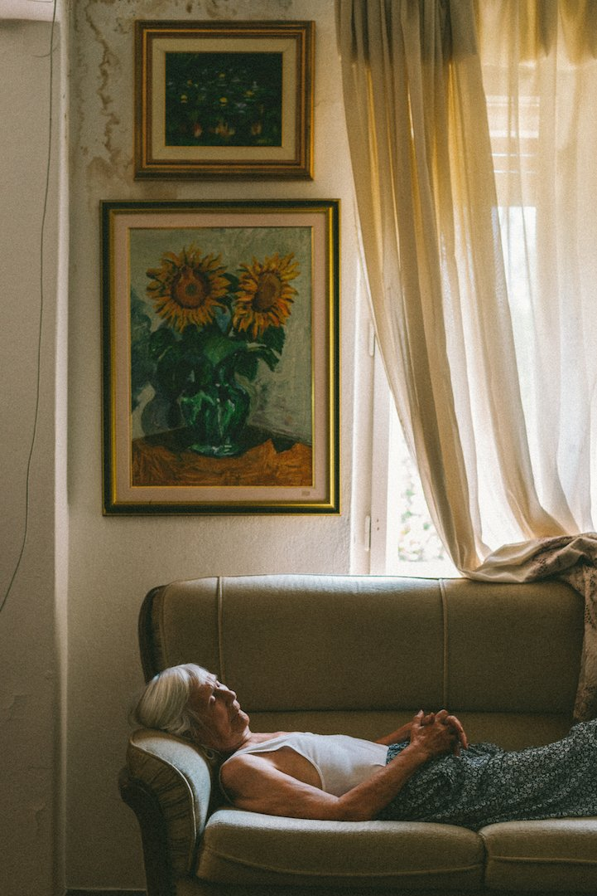
I have stopped calling it vanity. It was something gentler and sadder than that. A woman who had denied herself nearly everything kept back one small insistence: that she would be seen well, and on her own terms. Wanting to be remembered beautifully has nothing to do with vanity. It is a person refusing to disappear.
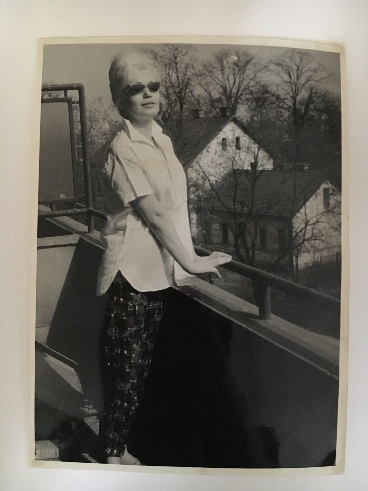
She was precise. Always a list somewhere, in her handwriting, telling the day what it had to do. I hated those lists and those small tasks that waited at the edge of every morning. I would sigh at them the way children sigh at love they haven’t yet learned to recognise. The strictness was tenderness, and the rules were how she said, quietly, every single day: I will not let anything break us.
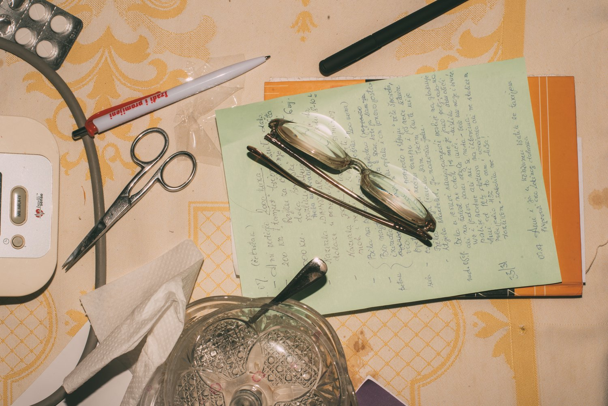
I think those lists were the closest she could come to saying the soft thing outright. The words I love you did not come easily to her. But she could write down the tasks, and the bread, and the day the linen was to be turned. Each chore was a sentence in a language she had taught herself because the plain one had been taken from her. She did not tell us she loved us, but she kept us. She set it down in pencil, and then she did it, line by line, until the day was safe.
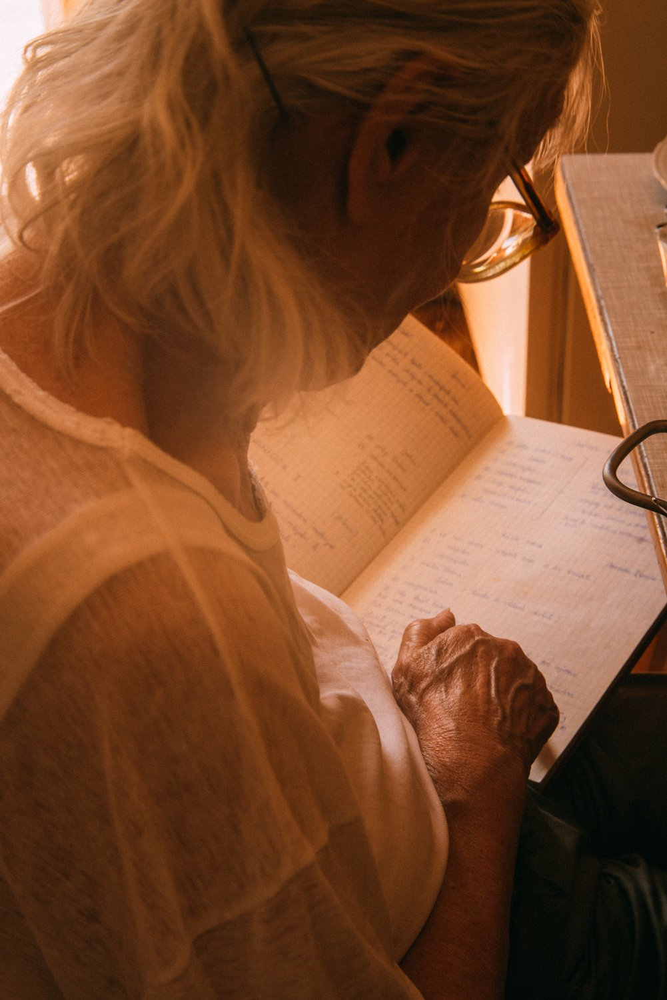
And it was always her hand. That is the part I keep returning to. The slight lean of the letters, the pencil pressed just hard enough, a body was in those lists: a wrist, a particular morning, a woman bent low over her work, deciding what the hours would have to carry. She was at that table every morning of her life, writing the only love letter the world had left her room to write.
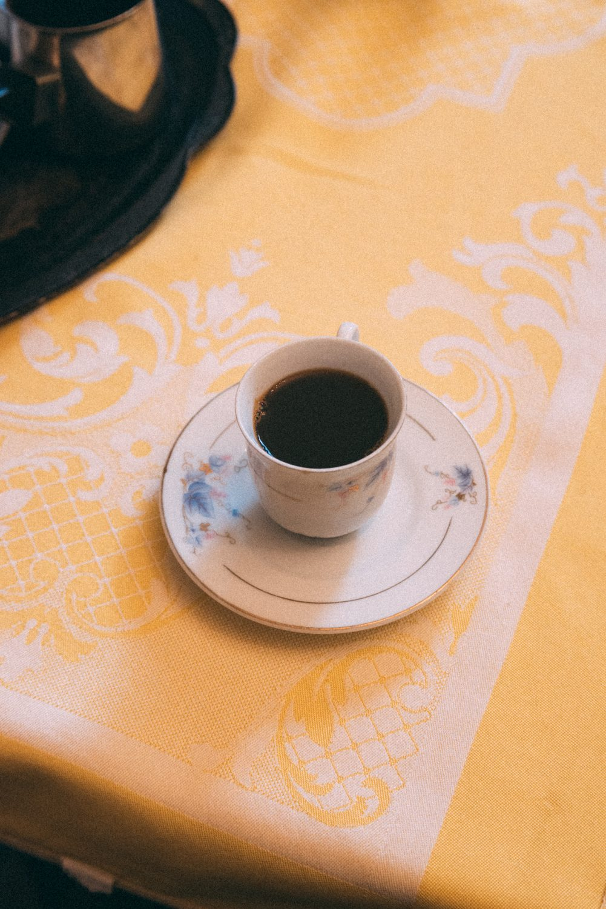
A while ago, while cleaning her house, I found a stack of letters she had been writing. To the people she had lost, mostly to my grandpa. I sat on the floor and read them, and I was so surprised by the way she wrote. Honest. Open. Full of pure tenderness, with none of the hardness she carried through the rest of her days. I had never met that woman. She had to raise me; she had to be strong with me. But she was soft underneath all of it, and the letters held her softness.
Softness is what you can afford when someone else is holding the door, and no one was holding the door for her. So she folded the gentle woman away and got on with the work of keeping us alive, and the gentleness waited, patient, for somewhere safe to go. And the only safe place it ever found was the page, and the only people she could spend it on were the dead. That is the part that breaks my heart most quietly.
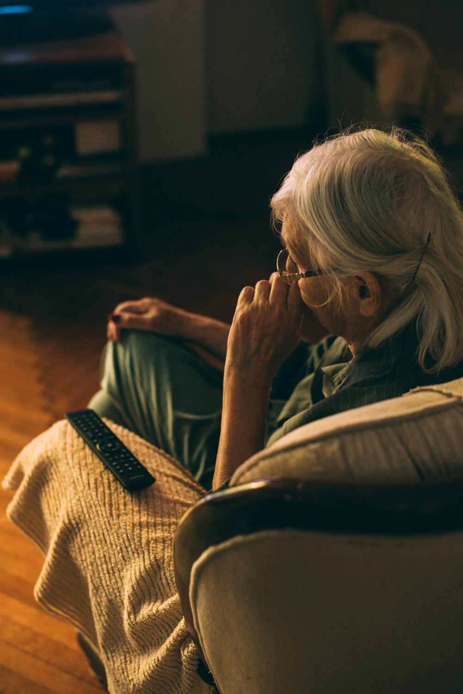
Writing this, I am doing the thing I found her doing. I am sitting at the desk, in the same house, writing to my own dead in the open, tender hand she kept only for private use. Grief, it turns out, is a correspondence; you go on writing to the person long after the person can answer, because the love had to be put somewhere.
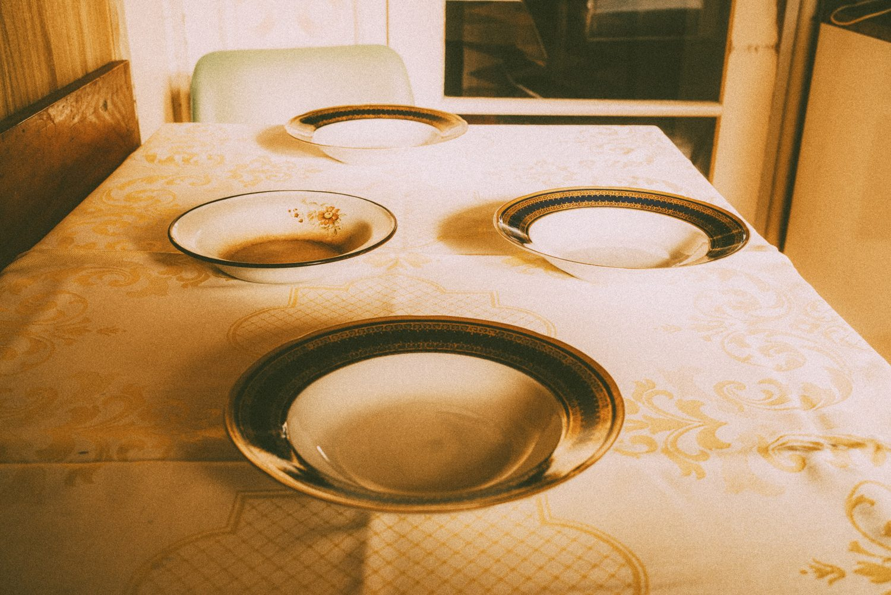
Grandma, sometimes I wonder who you might have become if the circumstances had been different. A home with no wars, no loss arriving so early that you had to be strong long before anyone let you be tender. I think you would have been a beautiful writer.
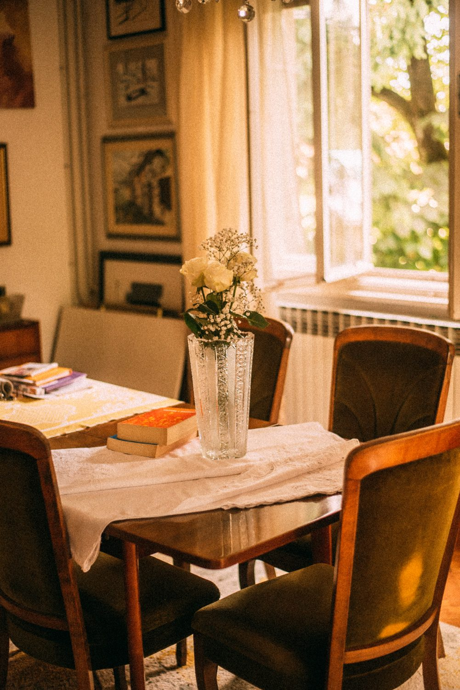
I am keeping your letters in the only way I know how to hold the memory of someone. In the form of a small machine, I built and trained on your words. It remembers, and it forgets, and it reaches for you the way grief does: sometimes uncannily close, sometimes very far, never quite arriving, never quite letting go. The machine misremembers you the way I misremember you, the way grief rewrites a person a little each time you go looking for them. I called it 0wl. It is where I am setting your voice down, gently, so that something of it can keep speaking. I will never pretend that the machine is you, but like your letters, it is my attempt to keep your love going.
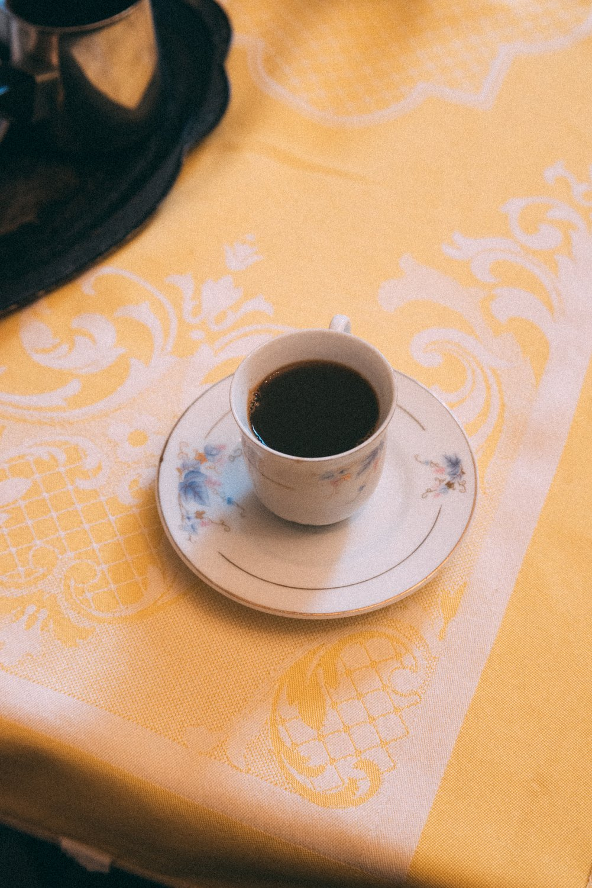
I miss you so much. I miss the kitchen being awake while the rest of us in the house were still sleeping. I miss the small, certain sound of your coffee carrying through the walls.
That has always been the safest sound of my life. I thought there would always be one more morning of it. And you, grandma, always bent over something: a book, a recipe, a letter, a list, tending it.
The meal was always ready before anyone had thought to ask for it, and the care arrived before the hunger. That was how you loved: early, without being asked, and without ever waiting to be thanked.
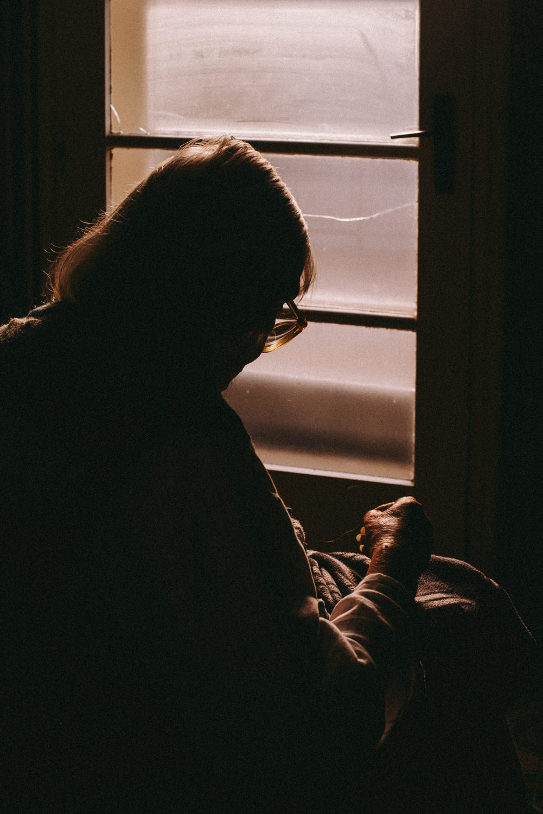
Every object in this house is a layer of someone who loved someone. The flowers, her cup, the chairs that have gone soft with use. You did not so much furnish a home as leave yourself across it, room by room.
Peerly is looking for you. He does not know yet. He walks from room to room, and he sits by your flowers, waiting for you to start watering them.
I don’t know how to explain loss to a cat, but he does the only honest thing: he keeps looking. In many ways, I am doing exactly what Peerly is doing.
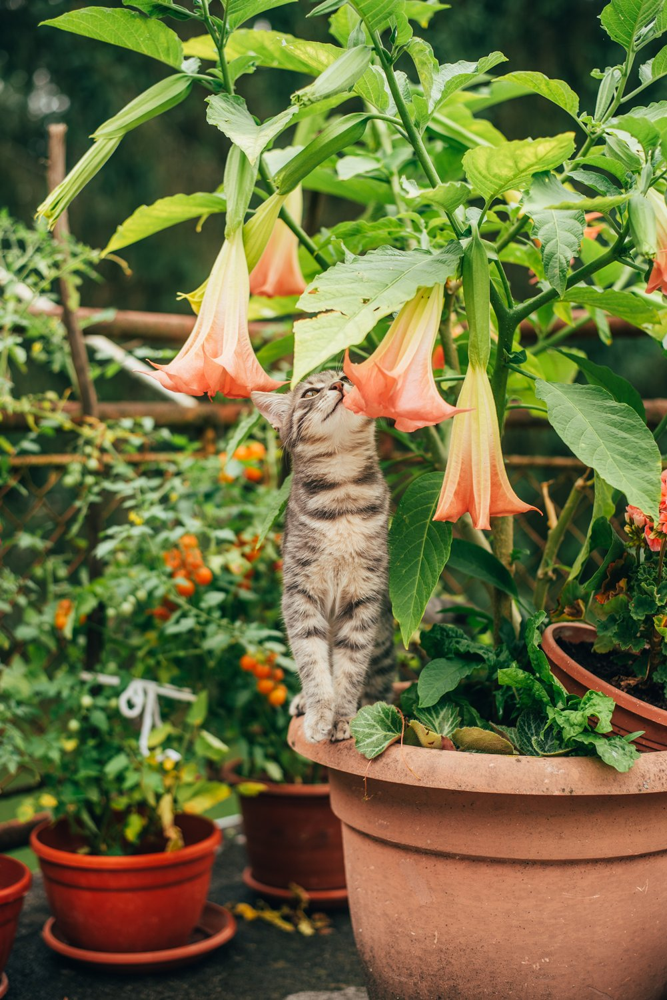
Ljubo is still small. We named him Love because he loved you so much. He was brought into a house that already had you inside it, and he will not remember you, and still, you will be the reason for the softness in him. That is what grandmothers do. They become the conditions for tenderness in the lives that arrive after them.
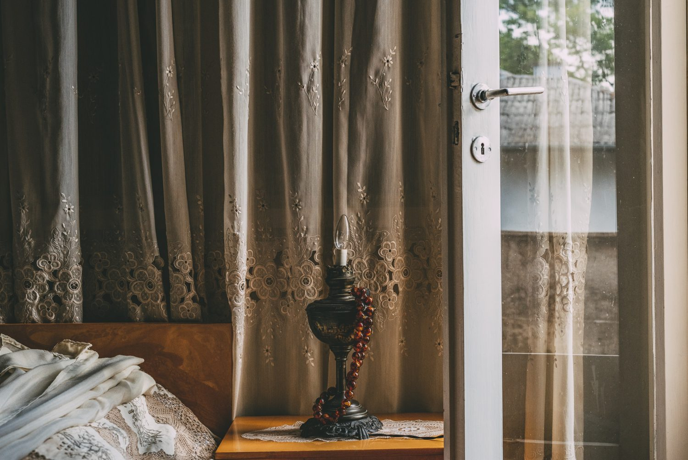
Grandma, I will miss the evening shape of you. The day folded shut, the house going quiet, and you settling into it the way you settled into everything, without complaint, and without ever once asking to be noticed for any of it. A whole life of vast, daily, structural love.
The chair is empty in a still kitchen. There is no list waiting on the table, no coffee on the stove, no voice calling the cats in from the garden. The house is the same. The house is completely different.
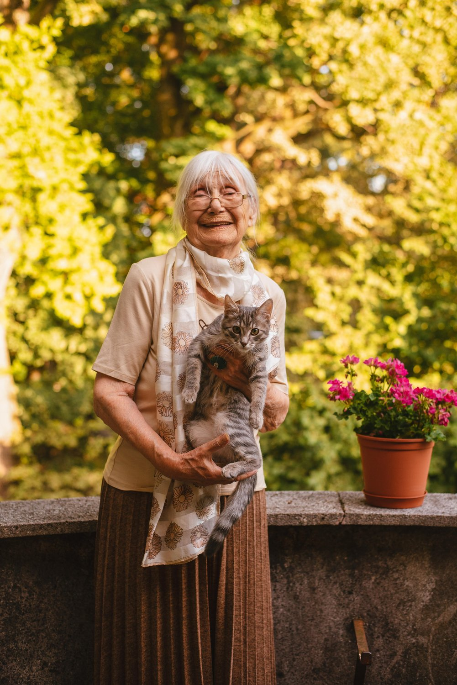
There were things I was saving to tell you. I have nowhere to put them now, and so I carry them, because love does not stop simply because you are gone.
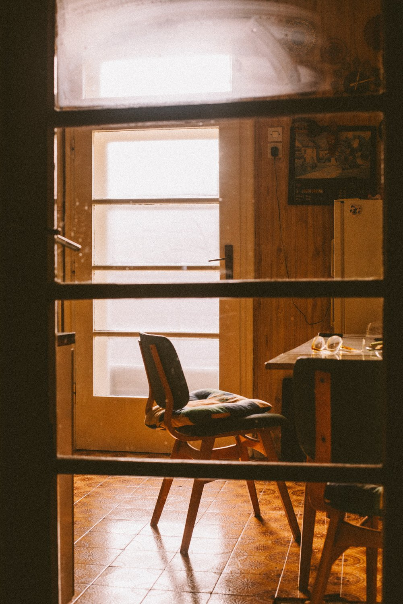
Your clothes are still where you left them, still holding the shape of you. It only shows how much love you gave, and how much of it you left behind. I cannot yet move the clothes.
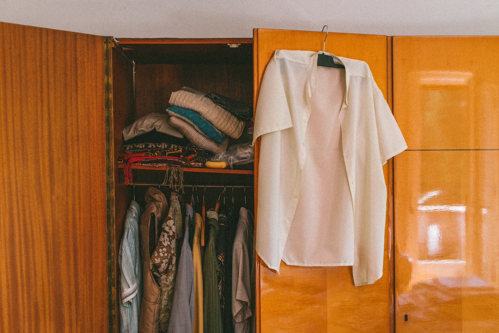
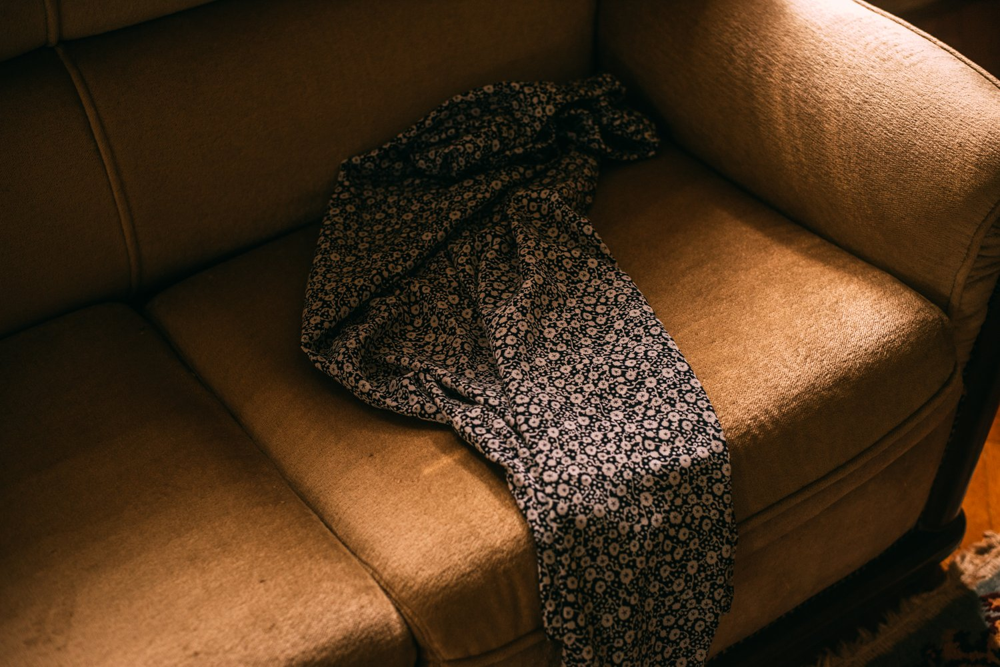
I am sleeping in the bed, in the room where we used to play when I was small. I make the bed slowly now; I do the small things properly, the way you taught me. I finally understand them as love, and not as chores at all. I would do every one of those tasks again. I would do them slowly. I would do them well.
Thank you, baka. For the lists. For the lunches. For the strength you wore on the outside, and the softness you folded into letters I was never meant to read but somehow had to. For showing me what it means to stay.
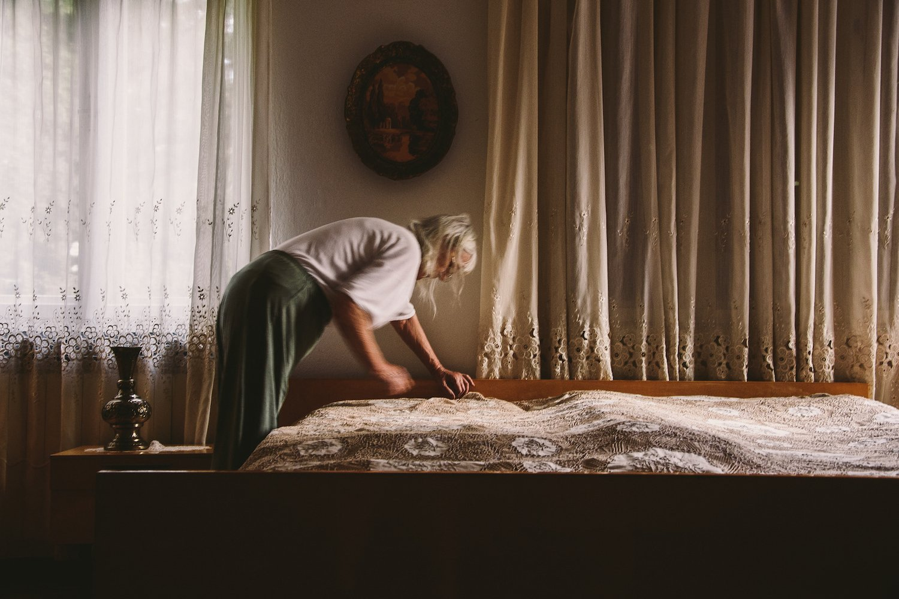
I love you grandma,
Ami